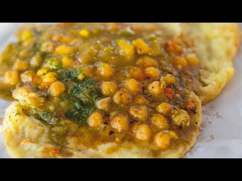

Doubles Recipe

DESCRIPTION
Doubles is a common street food originating in Trinidad and Tobago and is of Indo-Trinidadian origin.
It consists of curried chickpeas served on two fried flatbreads. It is normally eaten during breakfast,
but is also eaten occasionally during lunch or as a late-night snack and popular hangover food.
INGREDIENTS
-
FOR THE BARA
- 3 Cups All-Purpose Flour
- 1 Tsp Brown Sugar
- 1/2 Tsp Salt
- 1/2 Tsp Turmeric Powder
- 1 Tsp Yeast
- Warm Water (About 1 Cup & 3 Tbsps)
- 3 Cups Vegetable Oil, plus 1 Tbsp
-
FOR THE CHANNA TOPPING
- 2 1/2 Cups of Water
- 18 oz Canned Chick Peas (Drained)
- 5 Cloves Garlic Minced
- 1 1/2 Tsp Salt
- 1 1/4 Tbsp Curry Powder
- 2 Tbsp Minced Chadon Beni/Culantro
- 1/2 Tbsp Geera/Cumin Powder
- Salt and Black Pepper to taste
STEPS
- In medium bowl, add the flour, brown sugar, salt, turmeric and yeast. Mix to combine.
- Slowly add warm water little at a time and use your fingers to mix to allow the flour to absorb the liquid.
- Mix dough until it comes together to a slightly sticky but soft pliable consistency
- Knead for 1 minute to bring the dough together in one mass. Dough would be slight moist to the touch. Drizzle 1 tablespoon of oil atop the dough and rub to ensure the top doesn’t form a scab and cover with tea towel and let sit for 20 minutes.
- To prepare channa topping, place a medium sauce pan over high heat adding all at once, the water, channa, garlic, salt and curry powder.
- Stir and bring to a boil uncovered. Cook for 10 minutes then add the geera powder and chadon beni.
- Cook for an additional 5 minutes until chick peas are cooked and sauce is thickened.
- Season with salt and pepper and remove from the heat.
- To cook the fried bara, heat the three cups of oil in a shallow sauce pan to 450 degrees Fahrenheit.
- Lubricate your hands with a little oil and on your countertop lightly.
- Take golf ball size amount of bara dough and place on the greased countertop and gently use your lubricated hands to stretch out and open all of the dough balls to a thin size.
- As soon as all are opened out, carefully place one piece of stretched dough into the hot oil and fry using a perforated spoon for 5 seconds on each side until cooked.
- Place on paper napkins to remove excess oil and continue frying each piece and keep warm in a covered cooler.
- Additional condiments to top off your doubles will include, a drizzle of tamarind sauce, chadon beni sauce also a few dashes of Trini pepper sauce and for a fresh element, some grated cucumbers on top.
- Using your hands, grip a piece of the dough and use that to pick up some of the channa filling with some of the condiments.
- Enjoy